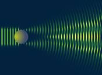

Что такое свет? Какова природа света? Почему белый свет разлагается на цвета? Сколько на самом деле цветов существует, семь или миллионы? Подобные вопросы будоражили любопытство человека практически всю его историю, от первых мыслителей и вплоть до XX века. Но, чтобы ответить на эти и другие вопросы, нужно понять природу света, которая, как оказалось, весьма сложная. В ходе этого урока вы познакомитесь с основными научными концепциями по вопросу о природе света, узнаете аргументы сторонников той или иной научной теории.
Оптика – раздел физики, который изучает световые явления и законы, установленные для них, а также взаимодействие света с веществом, природу света.
Информация о мире приходит к человеку посредством зрения. При помощи света мы получаем большую часть информации об окружающем мире.
Первые сведения о свете появились 2,5 тысячи лет назад.
Пифагор был одним из первых ученых, кто дал научную гипотезу относительно природы света (см. Рис. 1). Он первый не только догадался, но и доказал, что свет распространяется прямолинейно. Он, а затем и другие геометры, вплоть до Евклида, использовали световые явления отражения и преломления для построения основ геометрии. Недаром один из разделов оптики так и называется – геометрическая оптика.
Рис. 1. Пифагор
Пифагор: «Свет – поток частиц, которые излучают предметы, проникая в глаз человека, они приносят информацию о том, что же нас окружает».
В XVII веке сторонником этой теории стал Исаак Ньютон (см. Рис. 2). Он объяснял много световых явлений, основываясь на том, что свет – это поток специальных частиц.
Рис. 2. Исаак Ньютон
Ньютон не был столь категоричен в суждении о корпускулярной природе света и давал свои утверждения весьма обтекаемо, оставляя место сомнениям.
«Корпускула» происходит от лат. corpusculum – частица. Поэтому теория Ньютона стала называться корпускулярной теорией света.
Факты:
Прямолинейное распространение света.
Закон отражения.
Закон образования тени от предмета.
В это же время появилась другая теория – волновая теория света.
Сторонником этой теории был Христиан Гюйгенс. Он пытался объяснить те же явления, что и Ньютон, только с той позиции, что свет – это волна.
Гюйгенс построил волновую теорию света по аналогии с волновыми процессами на воде и в воздухе и потому считал, что световые волны также должны распространяться в какой-то упругой среде, которую назвал световым эфиром. Эта идея прослужила основой волновой оптики вплоть до начала XX века.
В те времена уже было замечено, что свет распространяется не только прямолинейно.
1. Свет может огибать препятствия – дифракция (см. Рис. 3).

Рис. 3. Дифракция
2. Волны могут складываться – интерференция (см. Рис. 4).
Рис. 4. Интерференция
Эти явления свойственны только волнам, поэтому Гюйгенс считал, что свет – это волна.
Корпускулярная теория не могла объяснить, как один луч проходит через другой. Если рассматривать свет как поток частиц, то должно наблюдаться взаимодействие, а его не наблюдалось, и это говорило в пользу того, что свет – волна.
В середине XIX века была создана теория Максвелла. Он доказал, что электромагнитное поле распространяется со скоростью 300 тысяч км в сек.
Вследствие проведенных опытов было выяснено, что с такой скоростью распространяется и свет.
Свет – частный случай электромагнитной волны.
XVII в. – датский ученый Ремер провел эксперимент, в котором выяснилось, что скорость распространения света равна примерно 300 тысяч км в сек.
1848 г. – Ипполит Физо доказал, что скорость света составляет 300 тысяч км в сек.
Это все подтверждало тот факт, что свет является электромагнитной волной.
В XIX веке Генрих Герц (см. Рис. 5) изучал свойства электромагнитных волн и показал, что свет может быть частицей. Герц открыл явление фотоэффекта.
Рис. 6. Генрих Герц
Генрих Герц изучал электромагнитные волны, изначально считая, что их не существует, и проявил настоящее мужество, первым признав их реальность как природного объекта.
Фотоэффект: под действием света из металлической пластины, заряженной отрицательно, выбиваются электроны.
Это может выполняться только в том случае, если свет – поток частиц.
В XX веке пришли к окончательному решению, введя понятие корпускулярно-волнового дуализма света.
Свет ведет себя при распространении как волна (волновые свойства), а при излучении и поглощении – как частица (со всеми свойствами частиц). То есть свет имеет двойную природу.
Поэтому все явления рассматриваются с позиций этих двух теорий.